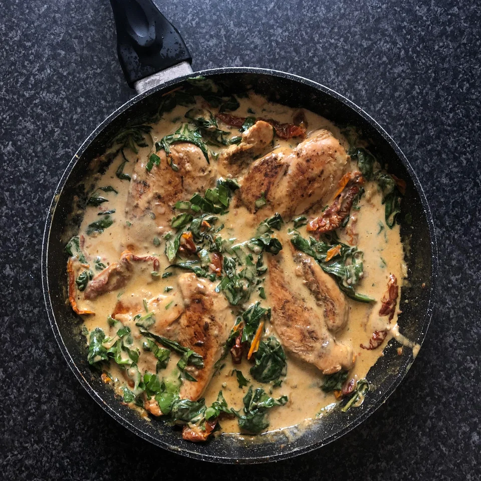

Creamy Tuscan Chicken

Description
Creamy chicken dish with tomato and cheese sauce. Perfect for dinner!
Ingredients
- 4 Chicken breasts
- 1 Jar of sun-dried tomatoes
- 6 cloves Garlic
- 3 cups Spinach
- 1/2 cup Grated parmesan
- 1 cup Double cream
- 1tsp Dijon mustard
- 3tbsp Oil (from tomato jar)
- 1 1/2tsp Paprika
- Salt and pepper, to taste
- Parsley for garnish
Steps
- Season chicken with paprika, salt and pepper.
- Sear chicken in a pan until golden and cooked through. Set aside.
- Using the same pan, heat oil and fry garlic for 1-2 minutes.
- Add tomatoes and cook for 3-4 minutes.
- Add and mix in mustard.
- Reduce heat before adding cream. Cook to a gentle simmer.
- Add more salt and pepper to taste.
- Add spinach and cook until leaves wilt in sauce.
- Add parmesan. Continue cooking for 2 minutes.
- Add chicken, garnish with parsley, and serve!
This recipe and associated image were sourced from
/r/recipes.